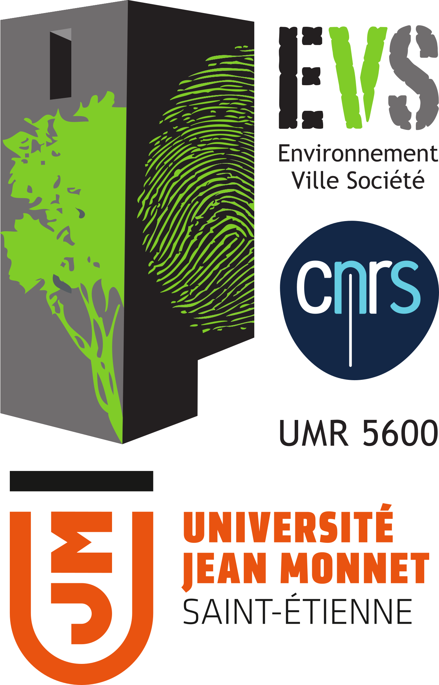

Les archives municipales de Saint-Étienne, dirigées par Pierre-Régis Dupuy, portent en cette année olympique, un projet de valorisation des équipements sportifs, passés et présents, de la ville. Basé sur les fonds d'archives qu'elles conservent et en partenariat avec le Laboratoire Environnement Ville Société (EVS - UMR 5600 CNRS) représenté par Pierre-Olivier Mazagol de l'Université Jean Monnet - Saint-Étienne, ce projet vise à développer une cartographie web de l'histoire des équipements sportifs de la ville.
Ce projet est financé par l'Institut ARTS (Arts, Recherche, Territoires, Savoirs), une initiative de l'Université Jean Monnet de Saint-Étienne visant à promouvoir une dynamique de recherche et de formation autour des arts. Grâce à la bourse SFRI Graduate+, un étudiant en Master 1 GéoNum a pu réaliser un stage de cinq mois aux archives municipales, où il a proposé des solutions techniques pour cartographier les équipements tout en valorisant les documents d'archives.
La carte présentée ici découle de la volonté de proposer une solution entièrement open source, gratuite et personnalisable, basée sur du code HTML, CSS, JavaScript, les librairies Leaflet, et des tuiles de carte libres de droit telles qu'OpenStreetMap. Les acteurs de ce projet ont à cœur de mettre en avant la culture, le patrimoine et les technologies des systèmes d'information géographique (SIG) durant les Jeux Olympiques de Paris et l'épreuve que la ville de Saint-Étienne accueillera.

